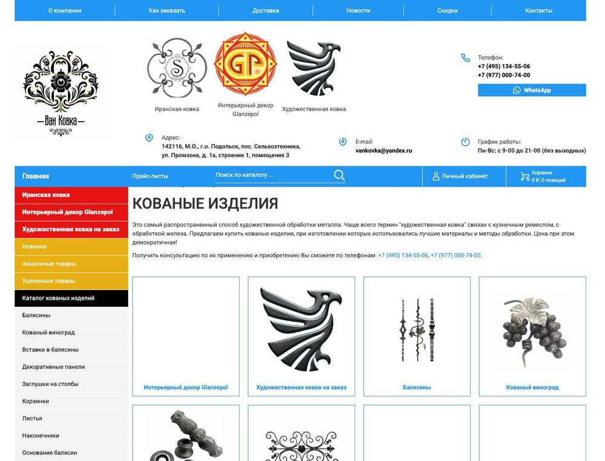
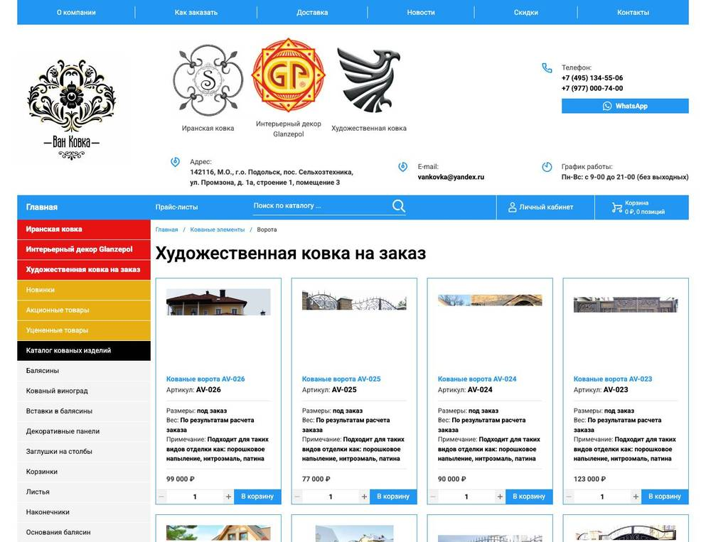
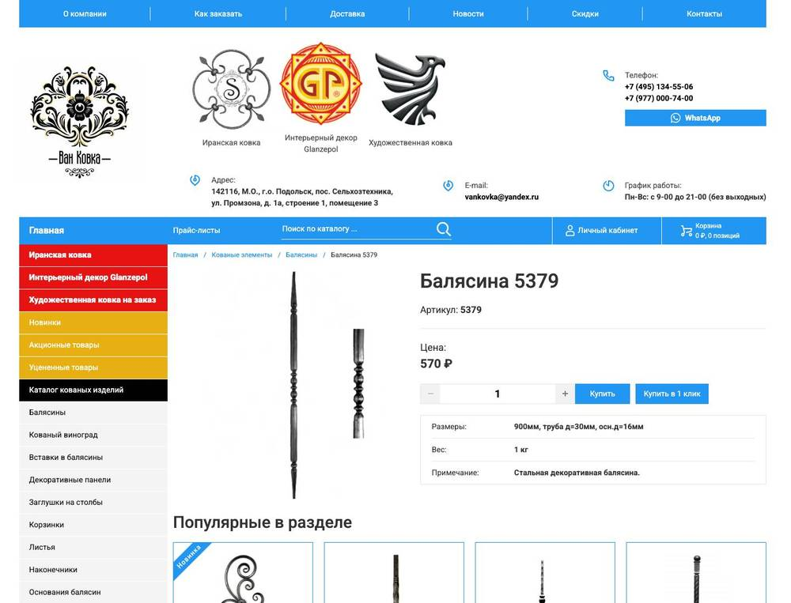
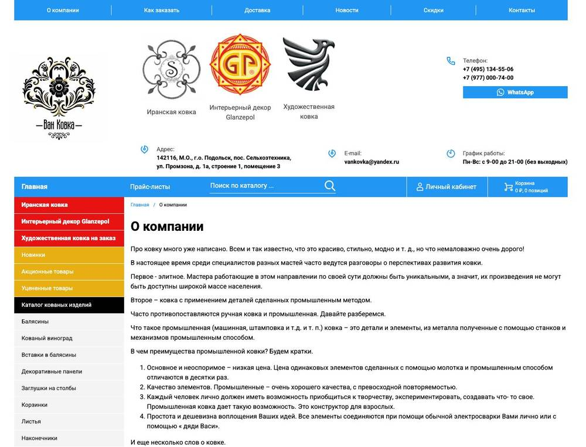

Сначала исследование: разбор текущего сайта (1 871 страница, 15 скриншотов), 176 запросов по Москве с частотностью и коммерциализацией, выдача Яндекса и Google по каждому, 26 сайтов конкурентов с обходом ключевых страниц, 17 из них со скриншотами, портрет четырёх сегментов клиентов и карта сайта. Потом десять кликабельных прототипов, в которых каждый блок подписан: существующий или новый по результатам исследования.
Предложение и форма «замерщик / эскиз» на первом экране, цифры, 8 категорий с ценой «от», работы, элементы для кузнецов, преимущества, 6 шагов, производство, «для кого», отзывы, FAQ.
Открыть прототипСтраница 2Быстрые фильтры, фильтр по параметрам, карточки с ценой «от» за м² и «Рассчитать стоимость», из чего складывается цена, этапы, установленные ворота рядом, витрина элементов, FAQ.
Открыть прототипСтраница 3Галерея крупных планов, «коротко», расчёт с выбором исполнения и покрытия, табы характеристик и условий, где стоят, дополнения, похожие, вопрос по изделию.
Открыть прототипСтраница 4Фильтр по типу и району, 12 объектов с размером, покрытием, ценой и сроком, карта объектов, отзывы по объектам, «заказать похожее».
Открыть прототипСтраница 5Задача, факты, фото, ход работы по датам, отзыв, спецификация и цена, похожие объекты, «хочу так же».
Открыть прототипСтраница 6Фото цеха, склада, зала, факты и цифры, оборудование, команда, документы и сертификаты, партнёры, отзывы, запись на визит.
Открыть прототипСтраница 7Шесть шагов для изделий и четыре для элементов, замер с зоной выезда, доставка, монтаж с ценами, оплата и гарантия, FAQ.
Открыть прототипСтраница 8Карта с меткой, цех и магазин, как проехать, фото входа, форма связи с темой, мессенджеры, реквизиты, ответы перед визитом.
Открыть прототипСтраница 9Элементы с остатком и количеством, изделие на заказ как заявка на расчёт, прогресс до скидки, доставка, оформление без регистрации.
Открыть прототипСтраница 10Вход по телефону, статус изделия по этапам с фото из цеха, история заказов элементов с повтором, документы, партнёрская программа.
Открыть прототипПочему добавлен каждый блок: данные исследования, скриншоты примеров у конкурентов из ТОП-10 со ссылками на их страницы, где посмотреть блок в прототипе. Плюс скриншоты текущего сайта «как есть», таблица конкурентов и все запросы исследования.
Открыть обоснованиеКП или ТЗ с перечнем блоков у проекта нет, за основу взят бриф с предварительной структурой страниц. Цены «от», сроки, гарантии, рейтинги, число объектов и другие цифры, помеченные оранжевым, условные и заполняются данными клиента. Кнопка «Скрыть пометки» в верхней панели прототипа убирает ярлыки. Мобильная версия: сузьте окно до 720 px или откройте с телефона.
| Факт | Что это значит для прототипа |
|---|---|
| Сайт закрыт от индексации: robots.txt «Disallow: /». Все 1 871 HTML-страницы «Blocked by robots.txt», в ТОП-10 Яндекса и Google по 176 запросам сайта нет ни разу. ИКС 90, отзывов в Яндексе 3. Сайт-близнец kovkaprom.ru с тем же каталогом в индексе: ИКС 510, 49 отзывов, в ТОП-10 Яндекса по 40 запросам, Google по 33 | Новая структура нужна вместе с открытием сайта для поиска; иначе трафика не будет. Разделы по типам изделий, свои заголовки и цены «от» под запросы |
| Спрос коммерческий: средняя коммерциализация 92%, геозависимых 89% запросов. Самые ёмкие темы по Москве: ворота и калитки 3 842 показов в месяц, перила и лестницы 4 413, заборы и ограждения 2 852, элементы 1 513 | Каталог по назначению (ворота, заборы, перила, козырьки, решётки, мангалы, мебель) и отдельный магазин элементов; главная разводит два продукта |
| В ТОП-10 Яндекса по Москве чаще всего: mki-kovka.ru 61, stalivan.ru 56, kovart.ru 50, studiakovki.ru 42, kovkaprom.ru 40, ковка-торг.рф 36. В Google: createmet.ru 78, zaborkin.ru 45, kovart.ru 43, kovka-moscow.ru 41, kovka-metalla.ru 41, stalivan.ru 37. Доля агрегаторов (Ozon, Avito, Pinterest, Яндекс Услуги) в Яндексе 21%, в Google 16% | Конкуренты это производственные сайты с ценой за м², фильтрами, портфолио и этапами; их блоки взяты за образец и показаны в обосновании |
| Цену за м² или за изделие показывают 13 из 14 обойдённых сайтов ТОП-10 (kovart 21 000 ₽/м², kovkadvor от 6 500, doorinhome от 8 450, stalivan до 51 000, akovka от 37 000, luxkoff от 12 000, kovka-na-zakaz от 261 900 ₽ за ворота). На van-kovka.ru у ворот цена «99 000 ₽» и кнопка «В корзину» как у балясины | Цена «от» за м² и ориентир за типовые 4 × 2 м в карточках, таблица «из чего складывается цена», «Рассчитать стоимость» вместо корзины для изделий на заказ |
| Замер, этапы, портфолио, отзывы, FAQ есть у 11 до 13 сайтов из 14 обойдённых (kovka-na-zakaz: «Процесс за 4 шага» с днями, 1 500+ работ с посёлками и ценой, 24 отзыва Яндекса с проектами; luxkoff: отдельные страницы «Выезд замерщика» и «Монтаж»; kovka-metalla: бесплатный выезд). На van-kovka.ru нет ни формы, ни портфолио, ни этапов, отзывы это 4 скриншота | Форма «вызвать замерщика / загрузить эскиз» на первом экране, страница условий с ценами замера, доставки и монтажа, раздел «Наши работы» с карточками объектов, отзывы с площадок |
| Четыре сегмента клиентов: частный дом (около 70% спроса), дизайнеры и архитекторы, коммерция и застройщики, кузнецы и мастерские (15-20% спроса, элементы). Главные страхи частника: цена вырастет после замера, сорвут срок, монтаж испортит, покрытие заржавеет | Блок «Для кого» с четырьмя сценариями, «цена фиксируется в договоре», сроки в шагах и карточках, своя бригада, гарантия по видам, личный кабинет со статусом изделия и повтором заказа элементов |
| Мобильная скорость главной: Performance 50, LCP 9 с, Speed Index 21 с, картинки PNG по 1,5 до 2,4 МБ. Навигация дублируется трижды (меню, левая колонка из 45 пунктов, подвал), у 6 подразделов изделий один Title «Художественная ковка на заказ» | Одно меню по типам изделий, полоса категорий, свои заголовки разделов, сжатые фото; технические правки описаны в crawl-summary.md и SITEMAP.md |
| Тема | Запросов | Сумма базовой частоты, Москва | Средняя коммерциализация |
|---|---|---|---|
| Ворота и калитки | 40 | 3 842 | 95% |
| Перила и лестницы | 33 | 4 413 | 94% |
| Заборы и ограждения | 17 | 2 852 | 97% |
| Решётки | 8 | 1 737 | 87% |
| Козырьки и навесы | 15 | 895 | 95% |
| Мангалы, беседки, сад | 20 | 1 886 | 80% |
| Элементы ковки | 22 | 1 513 | 95% |
| Мебель и интерьер | 4 | 303 | 86% |
| Ковка общие и бренд | 17 | 1 798 | 89% |
Полная таблица 176 запросов с частотностью, коммерциализацией и лидерами выдачи: rationale.html, раздел «Запросы исследования» и research/data/queries-clusters.md.
Ворота с калиткой, забор, перила, козырёк, навес. Страхи: цена вырастет, сорвут срок, монтаж испортит, заржавеет. В прототипе: цена «от», договор, сроки, своя бригада, гарантия, объекты рядом.
Перила, лестницы, интерьер по чертежу. Нужны образцы, точность, вознаграждение. В прототипе: карточка на главной, партнёрская программа в кабинете, тема «сотрудничество» в форме.
Ограждения, входные группы, серийные секции. Нужны договор, счёт, документы, объём. В прототипе: «Запросить КП», документы на странице производства, оплата по счёту.
Элементы оптом и регулярно. Нужны наличие, отгрузка в день оплаты, скидки, повтор заказа. В прототипе: витрина элементов, корзина с прогрессом до скидки, кабинет, прайс в Excel.
Подробно: research/AUDIENCE.md.
Дерево с запросами на каждую страницу, меню и судьба текущих URL: research/SITEMAP.md.

Логотипы, адрес, H1 «КОВАНЫЕ ИЗДЕЛИЯ», текст про историю ковки, плитка 39 разделов. Ни предложения, ни формы, ни работ, ни отзывов.

H1 «Художественная ковка на заказ», карточки «99 000 ₽, В корзину». Без фильтров, цены за м², сроков.

Одно фото, цена, «Купить», три строки характеристик. Нет покрытий, комплектации, условий, вопросов.

573 слова о промышленной и ручной ковке, 4 скриншота отзывов, 5 фото без подписей.
Фотографии изделий и выставочного зала взяты с текущего сайта van-kovka.ru, карты из статического API Яндекс Карт. Тексты написаны для прототипа на основе данных сайта, брифа и исследования; цифры, помеченные оранжевым, требуют подтверждения клиентом.
{kind=link}
{kind=link}
{kind=link}
{kind=link}